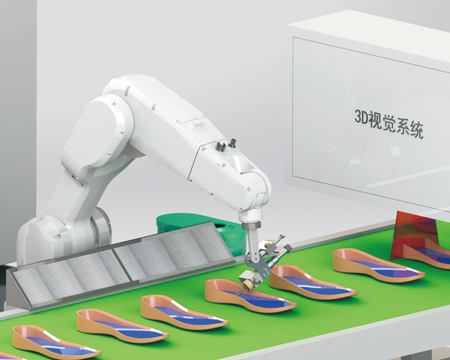
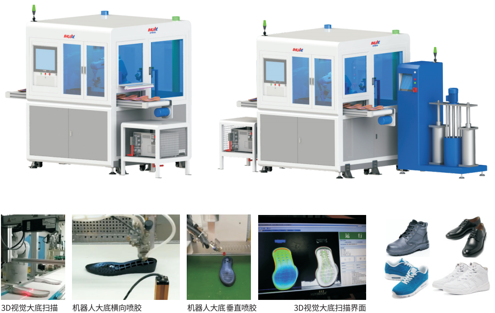
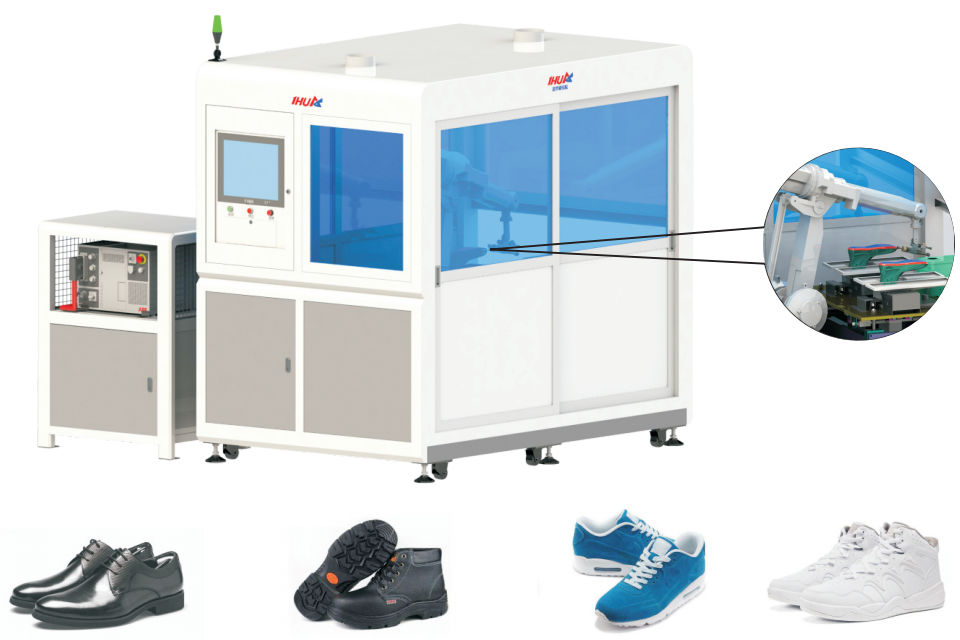
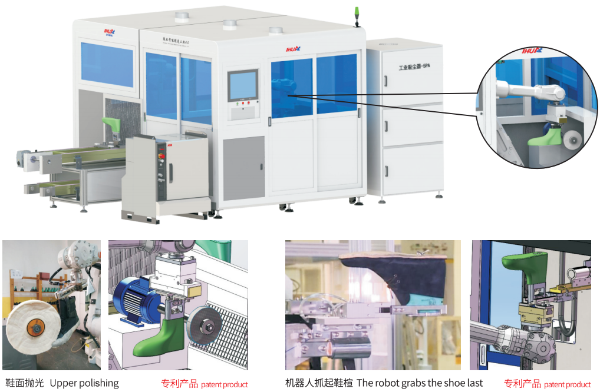
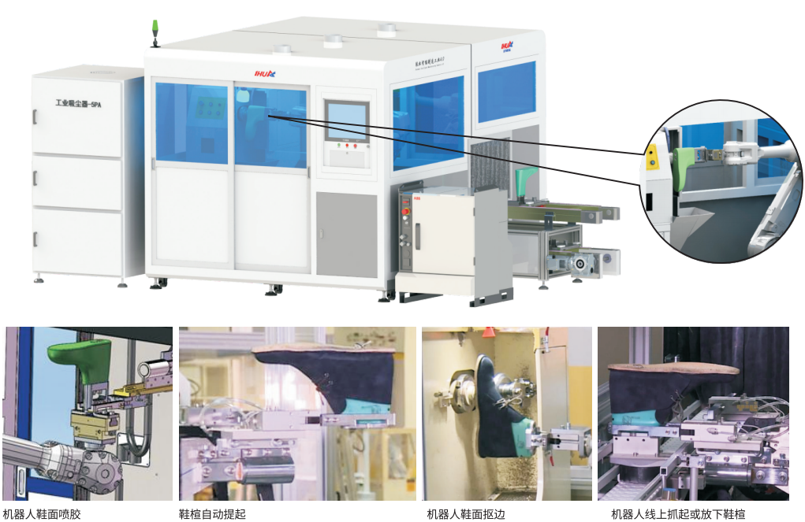
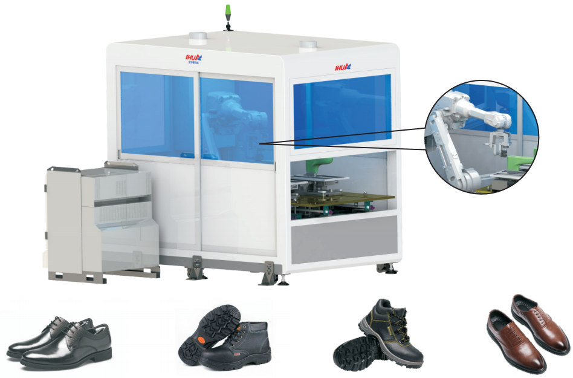
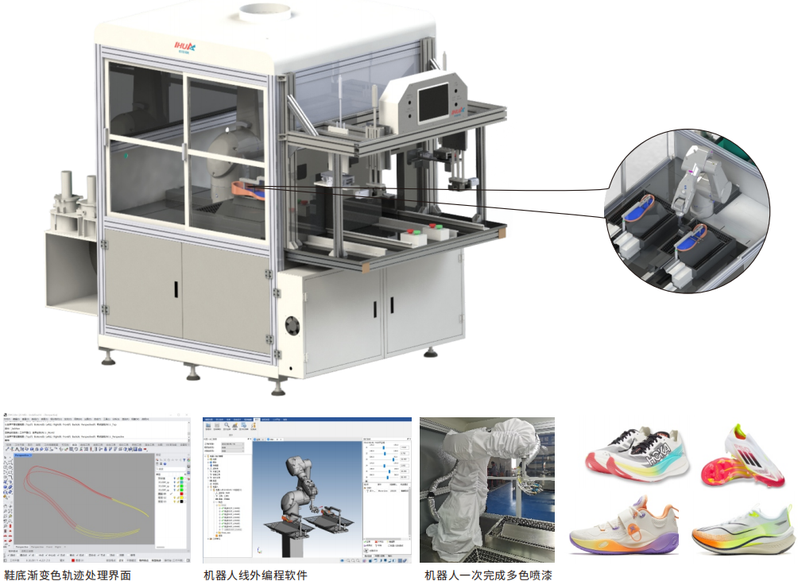
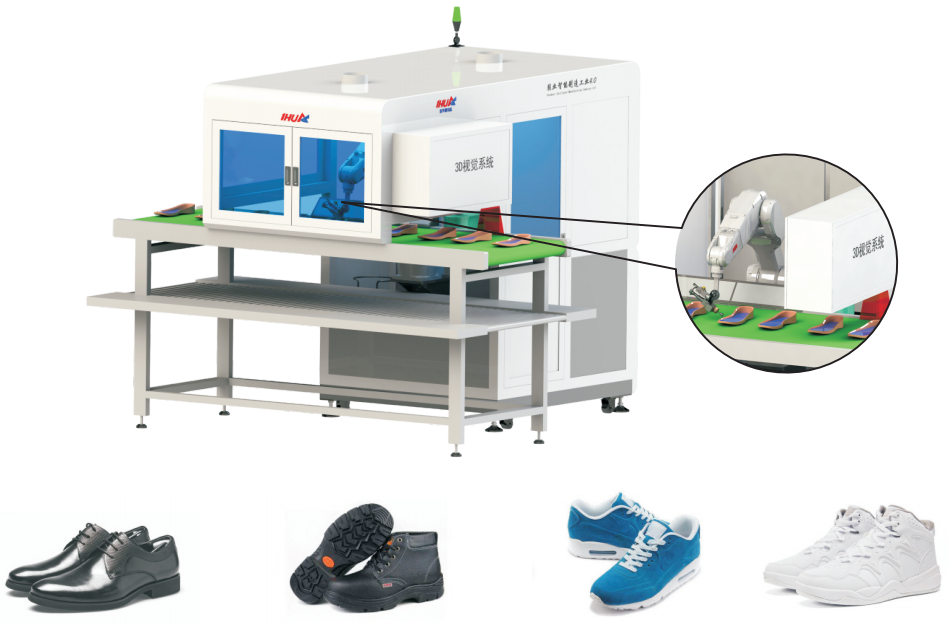

Our automated workstations leverage 6-axis industrial robots combined with advanced 3D vision systems to deliver precision spraying, polishing, roughing, and painting operations. Compatible with ABB, KUKA, and Yaskawa robot brands. Each workstation is customizable to your specific footwear type and production requirements.


6-axis industrial robot + 3D vision scanning system for cold-cement or PUR series outsole spraying. Automatically scans and programs for various shoe types, delivering stable glue application, reduced consumption, and higher throughput.
| Model | YH-3D-DDPJ-1200 |
|---|---|
| Function | Conveyor-fed outsole scanning + robot glue spraying |
| Precision | Outsole glue spray ±1mm |
| Control | 15" touchscreen + 3D vision spray software |
| Capacity | 120-150 pairs/hour |
| Robot | Standard ABB 1200 (±0.02mm), optional KUKA/Yaskawa |
| Dimensions | L1500×W1500×H2000mm |
| Power | AC 220-380V, 50/60Hz, 5KW rated |
| Air Pressure | 0.6-0.8 MPa |

6-axis industrial robot for cold-cement, leather, and safety shoe upper spraying. Improves product consistency, spray quality, reduces glue consumption, and boosts efficiency.
| Model | YH-XMPJ-1410 |
|---|---|
| Function | Last pulled into station, robot sprays upper glue |
| Precision | Upper spray ±1mm |
| Control | 15" touchscreen + spray software |
| Capacity | 120-150 pairs/hour |
| Robot | Standard ABB 1410 (±0.05mm), optional KUKA/Yaskawa |
| Dimensions | Station L1400×W2100×H2000mm | Total L2400×W2000×H2000mm |
| Power | AC 220-380V, 50/60Hz, 6KW rated |
| Air Pressure | 0.6-0.8 MPa |

6-axis industrial robot for leather shoe upper polishing. Delivers consistent finish quality while reducing worker dust exposure and improving throughput.
| Model | YH-XMPG-2600 |
|---|---|
| Function | Elevator lifts last, robot grabs last for polishing |
| Precision | Surface polish (no precision requirement) |
| Control | 15" touchscreen + polishing software |
| Capacity | 100-120 pairs/hour |
| Robot | Standard ABB 2600 (±0.05mm), optional KUKA/Yaskawa |
| Dimensions | Station L2000×W2690×H2000mm | Total L3500×W2690×H2000mm |
| Power | AC 220-380V, 50/60Hz, 8KW output |
| Air Pressure | 0.6-0.8 MPa |

6-axis industrial robot for Goodyear welted leather shoes and flip-flop shoe outsole/midsole edge trimming. Reduces dust exposure and boosts production consistency.
| Model | YH-KB-2600 |
|---|---|
| Function | Elevator lifts last, robot edge trims outsole/midsole |
| Precision | Outsole/midsole edge trim ±1mm |
| Control | 15" touchscreen + roughing software |
| Capacity | 100-120 pairs/hour |
| Robot | Standard ABB 2600 (±0.05mm), optional KUKA/Yaskawa |
| Dimensions | Station L2200×W2700×H2000mm | Total L3900×W2700×H2000mm |
| Power | AC 220-380V, 50/60Hz, 10KW rated |
| Air Pressure | 0.6-0.8 MPa |

6-axis industrial robot for cold-cement, leather, and safety shoe upper roughing. Ensures consistent quality, reduces dust hazards, and improves efficiency.
| Model | YH-XMDC-2600 |
|---|---|
| Function | Last pulled in, robot roughs upper surface |
| Precision | Upper roughing ±1mm |
| Control | 15" touchscreen + roughing software |
| Capacity | 120-150 pairs/hour |
| Robot | Standard ABB 2600 (±0.05mm), optional KUKA/Yaskawa |
| Dimensions | Station L1400×W2100×H2000mm | Total L2900×W2000×H2000mm |
| Power | AC 220-380V, 50/60Hz, 6KW rated |
| Air Pressure | 0.6-0.8 MPa |

Multi-color, single-color, and gradient painting for EVA, IP, MODEL soles and PU, TPU, plastic accessories. Offline programming for easy operation. Optional enclosed design with exhaust for environmental protection.
| Model | YH-DDPQ-XZ01 |
|---|---|
| Function | Soles/accessories on tray enter station for multi-color auto-painting |
| Precision | Spray ≤±2mm |
| Control | 10" touchscreen + offline programming (optional) |
| Capacity | 60-100 pairs/hour (design dependent) |
| Robot | Standard Elston ER10B-900MI, optional ABB/KUKA |
| Dimensions | L1280×W1400×H2080mm |
| Power | AC 220-380V, 50/60Hz, 5KW rated |
| Air Pressure | 0.6-0.8 MPa |

6-axis industrial robot + 3D vision for traditional production lines. Direct integration with existing lines. 3D vision auto-scans and programs for various shoe types.
| Model | YH-3D-CTXDDPJ-1200 |
|---|---|
| Function | Traditional line integration, 3D vision scans & sprays outsole |
| Precision | Outsole spray ±1mm |
| Control | 15" touchscreen + 3D vision spray software |
| Capacity | 120-150 pairs/hour |
| Robot | Standard ABB 1200 (±0.02mm), optional KUKA/Yaskawa |
| Dimensions | Station L1400×W2100×H2000mm | Total L2900×W2000×H2000mm |
| Power | AC 220-380V, 50/60Hz, 5KW rated |
| Air Pressure | 0.6-0.8 MPa |
We design and configure each workstation to your specific shoe type, production volume, and factory layout.
Request Consultation